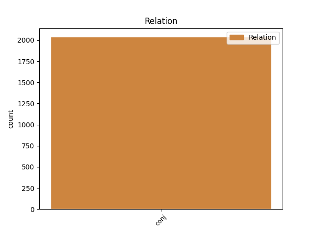
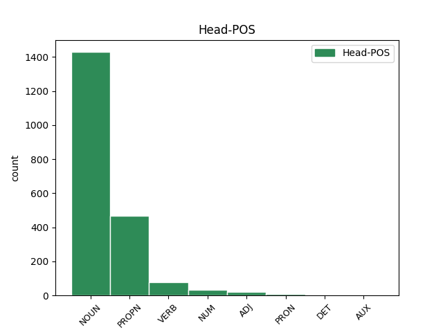
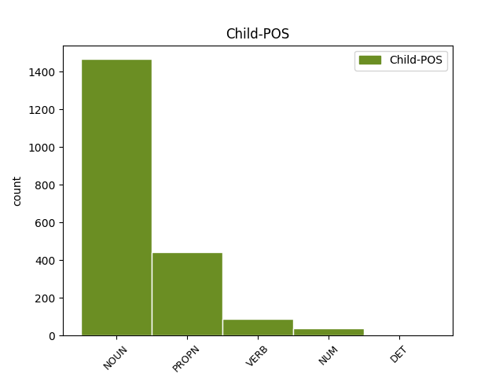

Distribution of features within this leaf



Agreement Rules sorted by frequency.
- When the dependent token is the conjunct(conj) of the head token, and the dependent token is NOUN.
1 Контролируемый _ _ _ _ 0 _ _ _
2 интерфейсом _ _ _ _ 0 _ _ _
3 захвата _ _ _ _ 0 _ _ _
4 движения _ _ _ _ 0 _ _ _
5 , _ _ _ _ 0 _ _ _
6 Geminoid _ _ _ _ 0 _ _ _
7 HI _ _ _ _ 0 _ _ _
8 - _ _ _ _ 0 _ _ _
9 1 _ _ _ _ 0 _ _ _
10 Может _ _ _ _ 0 _ _ _
11 имитировать _ _ _ _ 0 _ _ _
12 тело _ _ _ _ 0 _ _ _
13 Исигуро _ _ _ _ 0 _ _ _
14 и _ _ _ _ 0 _ _ _
15 мимикой _ _ _ _ 0 _ _ _
16 , _ _ _ _ 0 _ _ _
17 и _ _ _ _ 0 _ _ _
18 он _ _ _ _ 0 _ _ _
19 может _ _ _ _ 0 _ _ _
20 воспроизводить _ _ _ _ 0 _ _ _
21 голос голос NOUN NN Animacy=Inan|Case=Acc|Gender=Masc|Number=Sing 0 _ _ _
22 синхронно _ _ _ _ 0 _ _ _
23 с _ _ _ _ 0 _ _ _
24 его _ _ _ _ 0 _ _ _
25 движениями _ _ _ _ 0 _ _ _
26 и _ _ _ _ 0 _ _ _
27 осанку осанка NOUN NN Animacy=Inan|Case=Acc|Gender=Fem|Number=Sing 21 conj _ SpaceAfter=No
28 . _ _ _ _ 0 _ _ _
1 Этот _ _ _ _ 0 _ _ _
2 совет _ _ _ _ 0 _ _ _
3 даже _ _ _ _ 0 _ _ _
4 официально _ _ _ _ 0 _ _ _
5 рассматривался _ _ _ _ 0 _ _ _
6 , _ _ _ _ 0 _ _ _
7 как _ _ _ _ 0 _ _ _
8 заседание _ _ _ _ 0 _ _ _
9 архиереев _ _ _ _ 0 _ _ _
10 Испании Испания PROPN NNP Animacy=Inan|Case=Gen|Gender=Fem|Number=Sing 0 _ _ _
11 и _ _ _ _ 0 _ _ _
12 Галлии Галлия PROPN NNP Animacy=Inan|Case=Gen|Gender=Fem|Number=Sing 10 conj _ SpaceAfter=No
13 , _ _ _ _ 0 _ _ _
14 в _ _ _ _ 0 _ _ _
15 отличие _ _ _ _ 0 _ _ _
16 от _ _ _ _ 0 _ _ _
17 предыдущего _ _ _ _ 0 _ _ _
18 , _ _ _ _ 0 _ _ _
19 представленного _ _ _ _ 0 _ _ _
20 как _ _ _ _ 0 _ _ _
21 встреча _ _ _ _ 0 _ _ _
22 епископов _ _ _ _ 0 _ _ _
23 `` _ _ _ _ 0 _ _ _
24 различных _ _ _ _ 0 _ _ _
25 провинций _ _ _ _ 0 _ _ _
26 Испании _ _ _ _ 0 _ _ _
27 '' _ _ _ _ 0 _ _ _
28 . _ _ _ _ 0 _ _ _
1 В _ _ _ _ 0 _ _ _
2 специальных _ _ _ _ 0 _ _ _
3 салфетках _ _ _ _ 0 _ _ _
4 для _ _ _ _ 0 _ _ _
5 лечения _ _ _ _ 0 _ _ _
6 гнойных _ _ _ _ 0 _ _ _
7 ран _ _ _ _ 0 _ _ _
8 , _ _ _ _ 0 _ _ _
9 ожогов _ _ _ _ 0 _ _ _
10 и _ _ _ _ 0 _ _ _
11 диабетических _ _ _ _ 0 _ _ _
12 язв _ _ _ _ 0 _ _ _
13 -- _ _ _ _ 0 _ _ _
14 незаменима _ _ _ _ 0 _ _ _
15 ткань _ _ _ _ 0 _ _ _
16 АУТ _ _ _ _ 0 _ _ _
17 - _ _ _ _ 0 _ _ _
18 М _ _ _ _ 0 _ _ _
19 , _ _ _ _ 0 _ _ _
20 разработанная разработать VERB VBNL Animacy=Inan|Aspect=Perf|Case=Nom|Gender=Fem|Number=Sing|Tense=Past|VerbForm=Part|Voice=Pass 0 _ _ _
21 в _ _ _ _ 0 _ _ _
22 начале _ _ _ _ 0 _ _ _
23 80-х _ _ _ _ 0 _ _ _
24 годов _ _ _ _ 0 _ _ _
25 и _ _ _ _ 0 _ _ _
26 опробованная опробовать VERB VBNL Animacy=Inan|Aspect=Perf|Case=Nom|Gender=Fem|Number=Sing|Tense=Past|VerbForm=Part|Voice=Pass 20 conj _ _
27 при _ _ _ _ 0 _ _ _
28 боевых _ _ _ _ 0 _ _ _
29 действиях _ _ _ _ 0 _ _ _
30 в _ _ _ _ 0 _ _ _
31 Афганистане _ _ _ _ 0 _ _ _
32 . _ _ _ _ 0 _ _ _
1 Городская _ _ _ _ 0 _ _ _
2 команда _ _ _ _ 0 _ _ _
3 по _ _ _ _ 0 _ _ _
4 футзалу _ _ _ _ 0 _ _ _
5 ( _ _ _ _ 0 _ _ _
6 мини-футбол _ _ _ _ 0 _ _ _
7 ) _ _ _ _ 0 _ _ _
8 является _ _ _ _ 0 _ _ _
9 трёхкратным _ _ _ _ 0 _ _ _
10 чемпионом _ _ _ _ 0 _ _ _
11 Венгрии _ _ _ _ 0 _ _ _
12 ( _ _ _ _ 0 _ _ _
13 1998 _ _ _ _ 0 _ _ _
14 , _ _ _ _ 0 _ _ _
15 2000 _ _ _ _ 0 _ _ _
16 , _ _ _ _ 0 _ _ _
17 2005 _ _ _ _ 0 _ _ _
18 ) _ _ _ _ 0 _ _ _
19 , _ _ _ _ 0 _ _ _
20 пятикратным _ _ _ _ 0 _ _ _
21 обладателем _ _ _ _ 0 _ _ _
22 Кубка _ _ _ _ 0 _ _ _
23 Венгрии _ _ _ _ 0 _ _ _
24 ( _ _ _ _ 0 _ _ _
25 1995 _ _ _ _ 0 _ _ _
26 , _ _ _ _ 0 _ _ _
27 1999 _ _ _ _ 0 _ _ _
28 , _ _ _ _ 0 _ _ _
29 2000 _ _ _ _ 0 _ _ _
30 , _ _ _ _ 0 _ _ _
31 2005 2005 NUM CD Case=Nom|NumType=Card 0 _ _ _
32 , _ _ _ _ 0 _ _ _
33 2008 2008 NUM CD Case=Nom|NumType=Card 31 conj _ SpaceAfter=No
34 ) _ _ _ _ 0 _ _ _
35 и _ _ _ _ 0 _ _ _
36 обладателем _ _ _ _ 0 _ _ _
37 Суперкубка _ _ _ _ 0 _ _ _
38 Венгрии _ _ _ _ 0 _ _ _
39 2005 _ _ _ _ 0 _ _ _
40 . _ _ _ _ 0 _ _ _
1 Именно _ _ _ _ 0 _ _ _
2 поэтому _ _ _ _ 0 _ _ _
3 в _ _ _ _ 0 _ _ _
4 данном _ _ _ _ 0 _ _ _
5 деле _ _ _ _ 0 _ _ _
6 защитник _ _ _ _ 0 _ _ _
7 не _ _ _ _ 0 _ _ _
8 столько _ _ _ _ 0 _ _ _
9 говорит _ _ _ _ 0 _ _ _
10 о _ _ _ _ 0 _ _ _
11 невиновности _ _ _ _ 0 _ _ _
12 обвиняемого _ _ _ _ 0 _ _ _
13 ( _ _ _ _ 0 _ _ _
14 она _ _ _ _ 0 _ _ _
15 для _ _ _ _ 0 _ _ _
16 всех _ _ _ _ 0 _ _ _
17 очевидна _ _ _ _ 0 _ _ _
18 ) _ _ _ _ 0 _ _ _
19 , _ _ _ _ 0 _ _ _
20 сколько _ _ _ _ 0 _ _ _
21 разоблачает _ _ _ _ 0 _ _ _
22 алчность _ _ _ _ 0 _ _ _
23 преступников преступник NOUN NN Animacy=Anim|Case=Gen|Gender=Masc|Number=Plur 0 _ _ _
24 , _ _ _ _ 0 _ _ _
25 наживающихся _ _ _ _ 0 _ _ _
26 на _ _ _ _ 0 _ _ _
27 гибели _ _ _ _ 0 _ _ _
28 сограждан _ _ _ _ 0 _ _ _
29 , _ _ _ _ 0 _ _ _
30 и _ _ _ _ 0 _ _ _
31 тех тот DET DT Case=Gen|Number=Plur 23 conj _ SpaceAfter=No
32 , _ _ _ _ 0 _ _ _
33 кто _ _ _ _ 0 _ _ _
34 пользуется _ _ _ _ 0 _ _ _
35 связями _ _ _ _ 0 _ _ _
36 для _ _ _ _ 0 _ _ _
37 сокрытия _ _ _ _ 0 _ _ _
38 преступлений _ _ _ _ 0 _ _ _
39 . _ _ _ _ 0 _ _ _
Disagree Examples:
1 Поставленная _ _ _ _ 0 _ _ _
2 комиссии _ _ _ _ 0 _ _ _
3 задача _ _ _ _ 0 _ _ _
4 предусматривала _ _ _ _ 0 _ _ _
5 изучение изучение NOUN NN Animacy=Inan|Case=Acc|Gender=Neut|Number=Sing 0 _ _ _
6 имеющихся _ _ _ _ 0 _ _ _
7 зарубежных _ _ _ _ 0 _ _ _
8 данных _ _ _ _ 0 _ _ _
9 о _ _ _ _ 0 _ _ _
10 строительстве _ _ _ _ 0 _ _ _
11 полуподводных _ _ _ _ 0 _ _ _
12 миноносцев _ _ _ _ 0 _ _ _
13 , _ _ _ _ 0 _ _ _
14 проектирование проектирование NOUN NN Animacy=Inan|Case=Nom|Gender=Neut|Number=Sing 5 conj _ _
15 и _ _ _ _ 0 _ _ _
16 постройка _ _ _ _ 0 _ _ _
17 погружающегося _ _ _ _ 0 _ _ _
18 судна _ _ _ _ 0 _ _ _
19 для _ _ _ _ 0 _ _ _
20 береговой _ _ _ _ 0 _ _ _
21 обороны _ _ _ _ 0 _ _ _
22 . _ _ _ _ 0 _ _ _
1 Ломоносова Ломоносов PROPN NNP Animacy=Anim|Case=Gen|Gender=Masc|Number=Sing 0 _ _ _
2 , _ _ _ _ 0 _ _ _
3 Белорусским _ _ _ _ 0 _ _ _
4 государственным _ _ _ _ 0 _ _ _
5 университетом университет NOUN NN Animacy=Inan|Case=Ins|Gender=Masc|Number=Sing 1 conj _ _
6 и _ _ _ _ 0 _ _ _
7 другими _ _ _ _ 0 _ _ _
8 партнёрами _ _ _ _ 0 _ _ _
9 . _ _ _ _ 0 _ _ _
1 Несколько _ _ _ _ 0 _ _ _
2 научных _ _ _ _ 0 _ _ _
3 исследований _ _ _ _ 0 _ _ _
4 показали _ _ _ _ 0 _ _ _
5 статистические _ _ _ _ 0 _ _ _
6 корреляции _ _ _ _ 0 _ _ _
7 между _ _ _ _ 0 _ _ _
8 некоторыми _ _ _ _ 0 _ _ _
9 пестицидами пестицид NOUN NN Animacy=Inan|Case=Ins|Gender=Masc|Number=Plur 0 _ _ _
10 и _ _ _ _ 0 _ _ _
11 сельскохозяйственной _ _ _ _ 0 _ _ _
12 депрессии депрессия NOUN NN Animacy=Inan|Case=Gen|Gender=Fem|Number=Sing 9 conj _ _
1 Идеями _ _ _ _ 0 _ _ _
2 противопоставления _ _ _ _ 0 _ _ _
3 света _ _ _ _ 0 _ _ _
4 и _ _ _ _ 0 _ _ _
5 тьмы _ _ _ _ 0 _ _ _
6 изобилуют _ _ _ _ 0 _ _ _
7 многие _ _ _ _ 0 _ _ _
8 оккультные _ _ _ _ 0 _ _ _
9 магические _ _ _ _ 0 _ _ _
10 символы _ _ _ _ 0 _ _ _
11 , _ _ _ _ 0 _ _ _
12 но _ _ _ _ 0 _ _ _
13 суть _ _ _ _ 0 _ _ _
14 у _ _ _ _ 0 _ _ _
15 них _ _ _ _ 0 _ _ _
16 всё _ _ _ _ 0 _ _ _
17 время _ _ _ _ 0 _ _ _
18 одна _ _ _ _ 0 _ _ _
19 : _ _ _ _ 0 _ _ _
20 свет _ _ _ _ 0 _ _ _
21 ( _ _ _ _ 0 _ _ _
22 ян _ _ _ _ 0 _ _ _
23 ) _ _ _ _ 0 _ _ _
24 и _ _ _ _ 0 _ _ _
25 тьма _ _ _ _ 0 _ _ _
26 ( _ _ _ _ 0 _ _ _
27 инь _ _ _ _ 0 _ _ _
28 ) _ _ _ _ 0 _ _ _
29 вечно _ _ _ _ 0 _ _ _
30 возвращаются _ _ _ _ 0 _ _ _
31 , _ _ _ _ 0 _ _ _
32 следуя _ _ _ _ 0 _ _ _
33 друг _ _ _ _ 0 _ _ _
34 за _ _ _ _ 0 _ _ _
35 другом _ _ _ _ 0 _ _ _
36 , _ _ _ _ 0 _ _ _
37 и _ _ _ _ 0 _ _ _
38 порождают _ _ _ _ 0 _ _ _
39 то _ _ _ _ 0 _ _ _
40 , _ _ _ _ 0 _ _ _
41 что _ _ _ _ 0 _ _ _
42 китайцы _ _ _ _ 0 _ _ _
43 называют _ _ _ _ 0 _ _ _
44 `` _ _ _ _ 0 _ _ _
45 Десятью _ _ _ _ 0 _ _ _
46 тысячами тысяча NOUN NN Animacy=Inan|Case=Ins|Gender=Fem|Number=Plur 0 _ _ _
47 вещей _ _ _ _ 0 _ _ _
48 '' _ _ _ _ 0 _ _ _
49 , _ _ _ _ 0 _ _ _
50 то _ _ _ _ 0 _ _ _
51 есть _ _ _ _ 0 _ _ _
52 мир мир NOUN NN Animacy=Inan|Case=Nom|Gender=Masc|Number=Sing 46 conj _ _
53 сотворённый _ _ _ _ 0 _ _ _
54 . _ _ _ _ 0 _ _ _
1 На _ _ _ _ 0 _ _ _
2 первое _ _ _ _ 0 _ _ _
3 заседание _ _ _ _ 0 _ _ _
4 прибыли _ _ _ _ 0 _ _ _
5 97 _ _ _ _ 0 _ _ _
6 правых _ _ _ _ 0 _ _ _
7 депутатов депутат NOUN NN Animacy=Anim|Case=Gen|Gender=Masc|Number=Plur 0 _ _ _
8 и _ _ _ _ 0 _ _ _
9 один _ _ _ _ 0 _ _ _
10 социал-демократ социал-демократ NOUN NN Animacy=Anim|Case=Nom|Gender=Masc|Number=Sing 7 conj _ _
11 Матти _ _ _ _ 0 _ _ _
12 Паасивуори _ _ _ _ 0 _ _ _
13 . _ _ _ _ 0 _ _ _